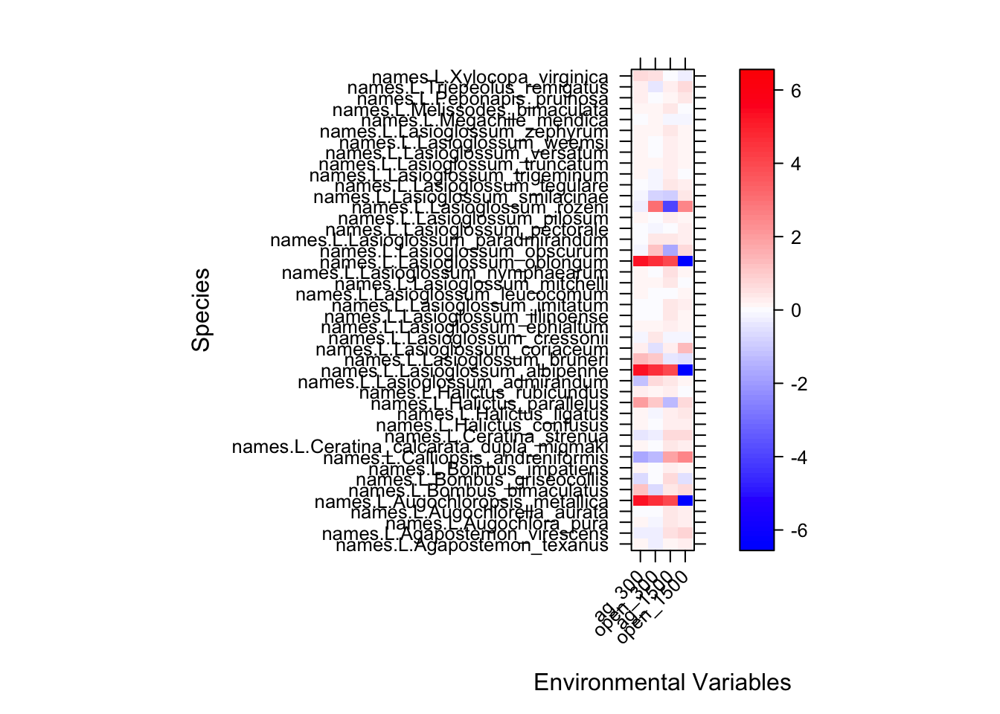

Fourth Corner and RQL Analysis
Heather Grab
April 24, 2018
Load libraries
library(mvabund)## do not compile dependencies from source
library(lattice)What is this method good for?
short answer: When you want to know what kinds of organisms occur where and why
long answer: A common strategy in any field is to look for predictor variables that can explain the response. In the case of studying why some taxa are abundant at a site while others are not, the relevant predictors are species traits.
The core idea of this approach is to fit a predictive model for species abundance as a function of environmental variables, species traits and their interaction. The environment trait interaction coefficients can be understood as the fourth corner and describes how environmental response across taxa varies as traits vary.
The essential components of a fourth corner analysis are the R, Q, and L matrices
R: the site by envoronment matrix that describes the envonmental conditions at each site
Q: the species by traits martix that describes the traits of each species (can be both quantitative and categorical)
L: the site by species matrix that describes which species occur at each site (can be quanitative or presence/absence)
Load the example dataset
About the example data
The example dataset is drawn from a study of pollinator communities across 3 different cropping systems in Northeastern USA care of Bartomeus et al. 2017. Our analysis will focus on just one of the three crops (watermelon) and its 45 pollinator species.
First…
The R matrix
this is the site by environment matrix that includes data on the land cover (agricultrual and open natural habitats) at 300m and 1500m from the 17 sites. There are are few other variables included in the dataset that were not analyzed in the original manuscript so we will subset those out for the moment.
envi <- read.csv("envi_watermelon.csv", row.names = 1); envi=envi[,c(1,2,5,6)] ## add row.names = 1 agrument to tell R that the first column should be treated as row names
head(envi)## ag_300 open_300 ag_1500 open_1500
## anc 34.9 6.0 17.1 9.0
## bra 49.6 20.2 25.9 9.9
## bri 37.3 2.9 13.3 9.4
## ced 52.1 15.1 19.1 10.6
## che 32.2 0.0 22.9 2.6
## lee 55.1 0.0 13.6 1.6The Q matrix
this is the species by trait matrix which includes a mix of categorical and quantitiative traits for each species. Missing data for any species will cause the model to fail
traits <- read.csv("traits_watermelon.csv",row.names = 1)
head(traits)## Nest_place Sociality Parasitic ITfam PDrar20
## Agapostemon_sericeus soil fac_social No 1.90000 861.9756
## Agapostemon_texanus soil fac_social No 1.87400 819.8443
## Agapostemon_virescens soil fac_social No 2.16000 904.1070
## Augochlora_pura wood Solitary No 1.59500 1663.8048
## Augochlorella_aurata soil Eusocial No 1.53375 1778.9098
## Augochloropsis_metallica soil Solitary No 1.90500 1151.2002
## tongue
## Agapostemon_sericeus 3.096000
## Agapostemon_texanus 3.492000
## Agapostemon_virescens 3.738375
## Augochlora_pura 2.754095
## Augochlorella_aurata 2.426700
## Augochloropsis_metallica 2.320000The L matrix
this is the site by species matrix. The default fourth corner model assumed a negative binomial error distribution so all values should be integer.
abd <- read.csv("abd_watermelon.csv", row.names = 1)
abd[1:5, 1:5] # just viewing the first 5 rows and 5 columns## Agapostemon_sericeus Agapostemon_texanus Agapostemon_virescens
## anc 0 0 1
## bra 0 0 0
## bri 0 2 0
## ced 0 0 0
## che 0 0 0
## Augochlora_pura Augochlorella_aurata
## anc 24 2
## bra 16 2
## bri 0 1
## ced 3 0
## che 8 2Exploring the data
We can look the the relative abundance distributions for the community using the built in plotting functions
We first need to convert our L matrix (site x species) to a mvabund matrix object
bee_spp=mvabund(abd)
plot(bee_spp)## Kicking off BoxPlot sequence## Overlapping points were shifted along the y-axis to make them visible.##
##
## ABOUT TO PLOT THE FUNCTION## Only the variables Bombus_impatiens, Lasioglossum_imitatum, Augochlora_pura, Ceratina_calcarata_dupla_miqmaki, Lasioglossum_versatum, Lasioglossum_pilosum, Lasioglossum_mitchelli, Melissodes_bimaculata, Peponapis_pruinosa, Triepeolus_remigatus, Augochlorella_aurata, Ceratina_strenua were included in the plot
## (the variables with highest total abundance).We can partition abundances based on categorical environmental variables
Our example dataset does not have any catergorical environmental variables so we will add one
envi2=envi
envi2$habitat="field"
envi2$habitat[1:8]<-"edge"
envi2$habitat=as.factor(envi2$habitat)
plot(bee_spp~envi2$habitat, tranformation = "no" )## Overlapping points were shifted along the y-axis to make them visible.##
## PIPING TO 2nd MVFACTOR## Only the variables Bombus_impatiens, Lasioglossum_imitatum, Augochlora_pura, Ceratina_calcarata_dupla_miqmaki, Lasioglossum_versatum, Lasioglossum_pilosum, Lasioglossum_mitchelli, Melissodes_bimaculata, Peponapis_pruinosa, Triepeolus_remigatus, Augochlorella_aurata, Ceratina_strenua were included in the plot
## (the variables with highest total abundance).By default the plot will only include the species with the highest total abundances. For each species plotted we can get a sense of whether they are more or less abundant in particular habitat types.
Multivariate GLM
Do communities differ across land use gradients?
mod1 <- manyglm(bee_spp ~ envi$ag_300, family="poisson")Check model assumptions
plot(mod1)Clearly we see a fan pattern in the model residuals, indicating a pattern of increasing variance at high abundances
Let’s try a negative binomial model
mod2 <- manyglm(bee_spp ~ envi$ag_300, family="negative_binomial")
plot(mod2)much better
Hypothesis testing with anova()
We can test the multivariate hypothesis of whether species composition varied across the habitats by using the anova function. This gives an analysis of deviance table where we use likelihood ratio tests and resampled p values to look for a significant effect of Habitat on the community data.
This is a bootstrap based test that can take a while to calculate on large datasets so for now we will set the number of reps to 99
anova(mod2, nBoot=99)## Time elapsed: 0 hr 0 min 1 sec## Analysis of Deviance Table
##
## Model: manyglm(formula = bee_spp ~ envi$ag_300, family = "negative_binomial")
##
## Multivariate test:
## Res.Df Df.diff Dev Pr(>Dev)
## (Intercept) 16
## envi$ag_300 15 1 56.08 0.23
## Arguments:
## Test statistics calculated assuming uncorrelated response (for faster computation)
## P-value calculated using 99 resampling iterations via PIT-trap resampling (to account for correlation in testing).We can see from the output that the cover of agriculture at the 300m radius does not drive differences in community composition.
Using the p.uni=“adjusted” agrument we determine whether any individual species is influenced by agricultural cover
anova(mod2, p.uni="adjusted", nBoot=99)## Time elapsed: 0 hr 0 min 1 sec## Analysis of Deviance Table
##
## Model: manyglm(formula = bee_spp ~ envi$ag_300, family = "negative_binomial")
##
## Multivariate test:
## Res.Df Df.diff Dev Pr(>Dev)
## (Intercept) 16
## envi$ag_300 15 1 56.08 0.26
##
## Univariate Tests:
## Agapostemon_sericeus Agapostemon_texanus
## Dev Pr(>Dev) Dev Pr(>Dev)
## (Intercept)
## envi$ag_300 0.664 1.00 0.546 1.00
## Agapostemon_virescens Augochlora_pura
## Dev Pr(>Dev) Dev Pr(>Dev)
## (Intercept)
## envi$ag_300 0.029 1.00 0.044 1.00
## Augochlorella_aurata Augochloropsis_metallica
## Dev Pr(>Dev) Dev
## (Intercept)
## envi$ag_300 3.808 0.80 1.253
## Bombus_bimaculatus Bombus_griseocollis
## Pr(>Dev) Dev Pr(>Dev) Dev
## (Intercept)
## envi$ag_300 0.99 5.666 0.53 2.572
## Bombus_impatiens Calliopsis_andreniformis
## Pr(>Dev) Dev Pr(>Dev) Dev
## (Intercept)
## envi$ag_300 0.94 3.037 0.90 0.083
## Ceratina_calcarata_dupla_miqmaki
## Pr(>Dev) Dev Pr(>Dev)
## (Intercept)
## envi$ag_300 1.00 0.007 1.00
## Ceratina_strenua Halictus_confusus
## Dev Pr(>Dev) Dev Pr(>Dev)
## (Intercept)
## envi$ag_300 8.512 0.21 0.158 1.00
## Halictus_ligatus Halictus_parallelus
## Dev Pr(>Dev) Dev Pr(>Dev)
## (Intercept)
## envi$ag_300 0.118 1.00 0.626 1.00
## Halictus_rubicundus Lasioglossum_admirandum
## Dev Pr(>Dev) Dev Pr(>Dev)
## (Intercept)
## envi$ag_300 0.985 0.99 5.657 0.61
## Lasioglossum_albipenne Lasioglossum_bruneri
## Dev Pr(>Dev) Dev Pr(>Dev)
## (Intercept)
## envi$ag_300 1.253 0.99 1.076 0.99
## Lasioglossum_coriaceum Lasioglossum_cressonii
## Dev Pr(>Dev) Dev
## (Intercept)
## envi$ag_300 0.192 1.00 2.77
## Lasioglossum_ephialtum
## Pr(>Dev) Dev Pr(>Dev)
## (Intercept)
## envi$ag_300 0.91 0.157 1.00
## Lasioglossum_illinoense Lasioglossum_imitatum
## Dev Pr(>Dev) Dev
## (Intercept)
## envi$ag_300 3.046 0.90 0.509
## Lasioglossum_leucocomum
## Pr(>Dev) Dev Pr(>Dev)
## (Intercept)
## envi$ag_300 1.00 0.779 1.00
## Lasioglossum_mitchelli Lasioglossum_nymphaearum
## Dev Pr(>Dev) Dev
## (Intercept)
## envi$ag_300 0.973 0.99 0.015
## Lasioglossum_oblongum Lasioglossum_obscurum
## Pr(>Dev) Dev Pr(>Dev) Dev
## (Intercept)
## envi$ag_300 1.00 1.253 0.99 0.331
## Lasioglossum_paradmirandum
## Pr(>Dev) Dev Pr(>Dev)
## (Intercept)
## envi$ag_300 1.00 0.339 1.00
## Lasioglossum_pectorale Lasioglossum_pilosum
## Dev Pr(>Dev) Dev Pr(>Dev)
## (Intercept)
## envi$ag_300 1.47 0.98 1.667 0.98
## Lasioglossum_rozeni Lasioglossum_smilacinae
## Dev Pr(>Dev) Dev Pr(>Dev)
## (Intercept)
## envi$ag_300 0.035 1.00 1.922 0.98
## Lasioglossum_tegulare Lasioglossum_trigeminum
## Dev Pr(>Dev) Dev
## (Intercept)
## envi$ag_300 0.048 1.00 0.471
## Lasioglossum_truncatum Lasioglossum_versatum
## Pr(>Dev) Dev Pr(>Dev) Dev
## (Intercept)
## envi$ag_300 1.00 0.018 1.00 1.223
## Lasioglossum_weemsi Lasioglossum_zephyrum
## Pr(>Dev) Dev Pr(>Dev) Dev
## (Intercept)
## envi$ag_300 0.99 0.421 1.00 0.001
## Megachile_mendica Melissodes_bimaculata
## Pr(>Dev) Dev Pr(>Dev) Dev
## (Intercept)
## envi$ag_300 1.00 0.014 1.00 0.532
## Peponapis_pruinosa Triepeolus_remigatus
## Pr(>Dev) Dev Pr(>Dev) Dev
## (Intercept)
## envi$ag_300 1.00 0.265 1.00 1
## Xylocopa_virginica
## Pr(>Dev) Dev Pr(>Dev)
## (Intercept)
## envi$ag_300 0.99 0.535 1.00
## Arguments:
## Test statistics calculated assuming uncorrelated response (for faster computation)
## P-value calculated using 99 resampling iterations via PIT-trap resampling (to account for correlation in testing.Multivariate SDM
The simplest form is a multivariate species distribution model (SDM) which predicts the abundance of each species based only on the environmental variables. The form of this model is essentially a negative binomial GLM with species as a fixed effect and a species by envi interaction.
if your data are a binomial, average abundace per site, coverage per m^2 or some other non-integer value, the form of the model can be adjusted using the family and method parameters.
sdm_fit=traitglm(abd,envi)## No traits matrix entered, so will fit SDMs with different env response for each sppView the standardized model coefficients for each species. Because all predictors are standardised, you can interpret the size of coefficients as a measure of importance. As interaction terms, the fourth coefficients each have an interpretation as the amount by which a unit (1 sd) change in the trait variable changes the slope of the relationship between abundance and a given environmental variable.
sdm_fit$fourth## ag_300 open_300
## names.L.Agapostemon_texanus 0.07077555 -0.251224790
## names.L.Agapostemon_virescens -0.27369613 -0.278524992
## names.L.Augochlora_pura 0.07087176 -0.081921637
## names.L.Augochlorella_aurata 0.01058551 0.027962393
## names.L.Augochloropsis_metallica 5.29505822 4.667881410
## names.L.Bombus_bimaculatus 1.24094122 -0.692567248
## names.L.Bombus_griseocollis -0.69330815 0.039461273
## names.L.Bombus_impatiens 0.16627112 0.014862421
## names.L.Calliopsis_andreniformis -1.74916223 -1.276284900
## names.L.Ceratina_calcarata_dupla_miqmaki 0.11617828 -0.020516676
## names.L.Ceratina_strenua -0.43813946 -0.233178109
## names.L.Halictus_confusus 0.09770080 0.021901354
## names.L.Halictus_ligatus 0.15058983 -0.186928540
## names.L.Halictus_parallelus 1.97113481 1.080836679
## names.L.Halictus_rubicundus 0.20829094 0.141482803
## names.L.Lasioglossum_admirandum -1.24659501 0.619070701
## names.L.Lasioglossum_albipenne 5.29505823 4.667881410
## names.L.Lasioglossum_bruneri 1.26451099 1.105401832
## names.L.Lasioglossum_coriaceum 0.27949487 -0.465071678
## names.L.Lasioglossum_cressonii -0.17829593 0.380266893
## names.L.Lasioglossum_ephialtum 0.11720607 0.137180620
## names.L.Lasioglossum_illinoense 0.00584229 0.032471153
## names.L.Lasioglossum_imitatum -0.05772238 0.037096520
## names.L.Lasioglossum_leucocomum 0.07601941 0.008056101
## names.L.Lasioglossum_mitchelli 0.09171221 0.143195776
## names.L.Lasioglossum_nymphaearum 0.07147500 -0.016278320
## names.L.Lasioglossum_oblongum 5.29505823 4.667881410
## names.L.Lasioglossum_obscurum -0.13873183 1.133991247
## names.L.Lasioglossum_paradmirandum -0.01115180 0.351235875
## names.L.Lasioglossum_pectorale 0.05631242 -0.150347237
## names.L.Lasioglossum_pilosum 0.08423771 -0.009815978
## names.L.Lasioglossum_rozeni -0.27197793 3.110746693
## names.L.Lasioglossum_smilacinae -0.08199312 -0.744703266
## names.L.Lasioglossum_tegulare 0.06481935 -0.091467795
## names.L.Lasioglossum_trigeminum 0.07169981 -0.094898714
## names.L.Lasioglossum_truncatum 0.14610680 0.169557695
## names.L.Lasioglossum_versatum 0.14805605 0.062816858
## names.L.Lasioglossum_weemsi 0.09968842 -0.005540382
## names.L.Lasioglossum_zephyrum 0.10597951 0.091692984
## names.L.Megachile_mendica 0.03863976 0.140974544
## names.L.Melissodes_bimaculata 0.17084789 0.135425213
## names.L.Peponapis_pruinosa 0.22028362 -0.029363221
## names.L.Triepeolus_remigatus 0.22820981 -0.426766119
## names.L.Xylocopa_virginica 0.67993465 0.579004862
## ag_1500 open_1500
## names.L.Agapostemon_texanus 0.17815140 0.20524157
## names.L.Agapostemon_virescens 0.46563996 0.83813427
## names.L.Augochlora_pura 0.39371265 0.29731588
## names.L.Augochlorella_aurata 0.36359585 0.24174569
## names.L.Augochloropsis_metallica 4.03767597 -6.56001988
## names.L.Bombus_bimaculatus 0.35678575 0.69445474
## names.L.Bombus_griseocollis 0.60940928 -0.55963511
## names.L.Bombus_impatiens 0.30994917 0.18381769
## names.L.Calliopsis_andreniformis 1.89736992 2.55433636
## names.L.Ceratina_calcarata_dupla_miqmaki 0.38660916 0.29443898
## names.L.Ceratina_strenua 0.61270490 0.61985561
## names.L.Halictus_confusus 0.32536873 0.22917774
## names.L.Halictus_ligatus 0.25277628 0.41643618
## names.L.Halictus_parallelus -1.35915720 0.72546943
## names.L.Halictus_rubicundus 0.27463893 0.06586258
## names.L.Lasioglossum_admirandum 0.36029219 0.17353804
## names.L.Lasioglossum_albipenne 4.03767597 -6.56001988
## names.L.Lasioglossum_bruneri -0.40777859 -0.56537939
## names.L.Lasioglossum_coriaceum 0.24851742 1.29916011
## names.L.Lasioglossum_cressonii -0.15800204 -0.18605613
## names.L.Lasioglossum_ephialtum 0.32949311 0.16210435
## names.L.Lasioglossum_illinoense 0.41539053 0.16892752
## names.L.Lasioglossum_imitatum 0.45401726 0.21558456
## names.L.Lasioglossum_leucocomum -0.01248195 0.11952614
## names.L.Lasioglossum_mitchelli 0.35590967 0.05754059
## names.L.Lasioglossum_nymphaearum 0.52478124 0.11177337
## names.L.Lasioglossum_oblongum 4.03767597 -6.56001988
## names.L.Lasioglossum_obscurum -1.71286376 0.68226397
## names.L.Lasioglossum_paradmirandum 0.45478406 0.23425185
## names.L.Lasioglossum_pectorale 0.06390930 0.31246356
## names.L.Lasioglossum_pilosum 0.28641854 0.18050911
## names.L.Lasioglossum_rozeni -3.94662040 2.45836893
## names.L.Lasioglossum_smilacinae -0.95093246 0.43263196
## names.L.Lasioglossum_tegulare 0.44901123 0.26570377
## names.L.Lasioglossum_trigeminum 0.29640242 0.01350734
## names.L.Lasioglossum_truncatum 0.32033187 0.07463766
## names.L.Lasioglossum_versatum 0.32325817 0.12552940
## names.L.Lasioglossum_weemsi 0.30253932 0.16101879
## names.L.Lasioglossum_zephyrum 0.45406798 0.18526505
## names.L.Megachile_mendica -0.09864339 -0.16043910
## names.L.Melissodes_bimaculata 0.36423635 0.02488645
## names.L.Peponapis_pruinosa 0.18584180 0.33618745
## names.L.Triepeolus_remigatus 0.21405349 0.59659613
## names.L.Xylocopa_virginica -0.03515747 -0.24084414a = max( abs(sdm_fit$fourth.corner) )
colort = colorRampPalette(c("blue","white","red"))
plot.spp = levelplot(t(as.matrix(sdm_fit$fourth.corner)), xlab="Environmental Variables",
ylab="Species", col.regions=colort(100), at=seq(-a, a, length=100),
scales = list( x= list(rot = 45)))
print(plot.spp)
While this is intersting for exploring the data we might guess that certain species are responding in a particular way based on their traits.
Fourth Corner Analysis
We can expand the analysis by adding the trait matrix and explicitly looking for the trait by environment interactions (fourth corner)
fit=traitglm(abd,envi,traits)
fit$fourth #print fourth corner terms## ag_300 open_300 ag_1500 open_1500
## Nest_placehole -0.022126259 0.2998671 -0.38177965 -0.27554344
## Nest_placesoil 0.421851422 0.6611413 -0.21841342 0.03728946
## Nest_placestem 0.168049151 0.4240527 -0.05627609 -0.01797214
## Nest_placewood 0.216954212 0.2715265 -0.08037851 0.23241242
## Socialityfac_social 0.001050133 -0.1646033 -0.08384819 0.13099355
## SocialitySolitary -0.028235695 -0.2131141 -0.01025747 -0.00830944
## ParasiticYes 0.179256142 -0.1374079 -0.13056093 0.24762981
## ITfam 0.812977896 0.9871009 -0.95328340 -0.95172845
## PDrar20 0.096645095 0.3719838 0.09255824 -0.32827087
## tongue -0.213393730 -0.3944371 0.59674640 0.71914573We can evaluate whether the data meet model assumptions using the plot function
plot(fit)## Warning in default.plot.manyglm(x, res.type = res.type, which = which,
## caption = caption, : Only the first 1 colors will be used for plotting.
anova(fit, nBoot = 10)## Using block resampling...
## Resampling begins for test 1.
## Resampling run 0 finished. Time elapsed: 0.01 minutes...
## Time elapsed: 0 hr 0 min 14 sec## Analysis of Deviance Table
##
## Model 1: traitglm(L = abd, R = envi, Q = traits, get.fourth = FALSE)
## Model 2: traitglm(L = abd, R = envi, Q = traits)
##
## Multivariate test:
## Res.Df Df.diff Dev Pr(>Dev)
## Main effects only 712
## env:trait (fourth corner) 672 40 69.89 0.182
## Arguments: P-value calculated using 10 resampling iterations via PIT-trap block resampling (to account for correlation in testing).we can see from the output that the model we are fitting is pretty complex
we also see that the overall trait by environment interaction term is not supported (P>0.05)
We can also explore the effects of individual trait by environment interactions using the summary function
** Warning this is slow **
we will limilt the number of bootstrap reps to 10 (nBoot=10) but 1000 should be using for final analyses
summary(fit, nBoot=10) ##
## Test statistics:
## wald value Pr(>wald)
## (Intercept) 7.628 0.0909 .
## sppAgapostemon_texanus 0.139 0.7273
## sppAgapostemon_virescens 0.201 0.7273
## sppAugochlora_pura 6.353 0.0909 .
## sppAugochlorella_aurata 3.604 0.0909 .
## sppAugochloropsis_metallica 0.763 0.1818
## sppBombus_bimaculatus 0.721 0.3636
## sppBombus_griseocollis 0.737 0.2727
## sppBombus_impatiens 7.293 0.0909 .
## sppCalliopsis_andreniformis 0.024 1.0000
## sppCeratina_calcarata_dupla_miqmaki 5.233 0.0909 .
## sppCeratina_strenua 2.142 0.0909 .
## sppHalictus_confusus 3.044 0.0909 .
## sppHalictus_ligatus 2.611 0.0909 .
## sppHalictus_parallelus 1.084 0.1818
## sppHalictus_rubicundus 1.081 0.3636
## sppLasioglossum_admirandum 0.768 0.3636
## sppLasioglossum_albipenne 0.729 0.2727
## sppLasioglossum_bruneri 0.586 0.4545
## sppLasioglossum_coriaceum 0.828 0.3636
## sppLasioglossum_cressonii 0.290 0.7273
## sppLasioglossum_ephialtum 0.568 0.5455
## sppLasioglossum_illinoense 1.700 0.0909 .
## sppLasioglossum_imitatum 6.435 0.0909 .
## sppLasioglossum_leucocomum 1.319 0.0909 .
## sppLasioglossum_mitchelli 3.927 0.0909 .
## sppLasioglossum_nymphaearum 1.303 0.1818
## sppLasioglossum_oblongum 0.771 0.4545
## sppLasioglossum_obscurum 0.291 0.6364
## sppLasioglossum_paradmirandum 2.800 0.0909 .
## sppLasioglossum_pectorale 1.488 0.2727
## sppLasioglossum_pilosum 4.471 0.0909 .
## sppLasioglossum_rozeni 0.966 0.1818
## sppLasioglossum_smilacinae 0.758 0.3636
## sppLasioglossum_tegulare 2.080 0.0909 .
## sppLasioglossum_trigeminum 0.243 0.9091
## sppLasioglossum_truncatum 0.340 0.8182
## sppLasioglossum_versatum 5.157 0.0909 .
## sppLasioglossum_weemsi 3.316 0.0909 .
## sppLasioglossum_zephyrum 0.951 0.3636
## sppMegachile_mendica 0.890 0.1818
## sppMelissodes_bimaculata 3.939 0.0909 .
## sppPeponapis_pruinosa 3.196 0.0909 .
## sppTriepeolus_remigatus 1.389 0.0909 .
## sppXylocopa_virginica 1.703 0.1818
## ag_300 0.275 0.3636
## open_300 0.606 0.1818
## ag_1500 2.595 0.0909 .
## open_1500 0.397 0.3636
## ag_300.squ 1.937 0.0909 .
## open_300.squ 1.388 0.3636
## ag_1500.squ 2.488 0.0909 .
## open_1500.squ 1.732 0.1818
## ag_300.Nest_placehole 0.074 0.4545
## ag_300.Nest_placesoil 1.361 0.3636
## ag_300.Nest_placestem 0.969 0.3636
## ag_300.Nest_placewood 0.812 0.5455
## ag_300.Socialityfac_social 0.010 1.0000
## ag_300.SocialitySolitary 0.192 0.6364
## ag_300.ParasiticYes 1.711 0.1818
## ag_300.ITfam 1.593 0.1818
## ag_300.PDrar20 0.907 0.4545
## ag_300.tongue 0.425 0.6364
## open_300.Nest_placehole 0.457 0.1818
## open_300.Nest_placesoil 1.621 0.2727
## open_300.Nest_placestem 1.941 0.1818
## open_300.Nest_placewood 0.786 0.4545
## open_300.Socialityfac_social 1.197 0.3636
## open_300.SocialitySolitary 1.083 0.4545
## open_300.ParasiticYes 0.889 0.6364
## open_300.ITfam 1.759 0.1818
## open_300.PDrar20 2.779 0.0909 .
## open_300.tongue 0.653 0.4545
## ag_1500.Nest_placehole 0.733 0.1818
## ag_1500.Nest_placesoil 0.642 0.7273
## ag_1500.Nest_placestem 0.305 0.8182
## ag_1500.Nest_placewood 0.277 0.9091
## ag_1500.Socialityfac_social 0.655 0.8182
## ag_1500.SocialitySolitary 0.065 0.9091
## ag_1500.ParasiticYes 1.002 0.3636
## ag_1500.ITfam 1.819 0.1818
## ag_1500.PDrar20 0.777 0.5455
## ag_1500.tongue 1.114 0.1818
## open_1500.Nest_placehole 0.657 0.1818
## open_1500.Nest_placesoil 0.094 1.0000
## open_1500.Nest_placestem 0.083 1.0000
## open_1500.Nest_placewood 0.689 0.4545
## open_1500.Socialityfac_social 0.944 0.1818
## open_1500.SocialitySolitary 0.044 0.9091
## open_1500.ParasiticYes 1.808 0.0909 .
## open_1500.ITfam 1.671 0.2727
## open_1500.PDrar20 2.441 0.0909 .
## open_1500.tongue 1.202 0.4545
## ---
## Signif. codes: 0 '***' 0.001 '**' 0.01 '*' 0.05 '.' 0.1 ' ' 1
##
## Test statistic: 24.52, p-value: 0.0909
## Arguments: P-value calculated using 10 resampling iterations via pit.trap resampling.We can plot the results in a heatmap similar to the SDM plot above
a = max( abs(fit$fourth.corner) )
colort = colorRampPalette(c("blue","white","red"))
plot.4th = levelplot(t(as.matrix(fit$fourth.corner)), xlab="Environmental Variables",
ylab="Species traits", col.regions=colort(100), at=seq(-a, a, length=100),
scales = list( x= list(rot = 45)))
print(plot.4th)adding a LASSO penalty
Given that there are many traits and even environmental factors that are not strong predictors of abundance, we can reduce the number of predictor terms in our models using various automatic model selection algorithims
LASSO is an optimization algorithm (Least Absolute Shrinkage and Selection Operator) that performs both variable selection and regularization in order to enhance the prediction accuracy and interpretability of the statistical model it produces.
LASSO is a great machine learning tool for dealing with complex datasets and had broad applications to many statistical methods. Luck for us, LASSO comes baked in to the mvabund package. All we need to do is add the method=“glm1path” argument
ft1=traitglm(abd,envi,traits,method="glm1path")
ft1$fourth #notice LASSO penalty has shrunk many interactions to zero## ag_300 open_300 ag_1500 open_1500
## Nest_placecavity 0.00000000 0.00000000 0.000000000 -0.03615099
## Nest_placehole 0.00000000 0.00000000 0.000000000 -0.07109140
## Nest_placesoil 0.00000000 0.03832670 -0.005213896 0.00000000
## Nest_placestem -0.04997808 0.00000000 0.017326634 0.05622886
## Nest_placewood 0.00000000 0.00000000 0.000000000 0.00000000
## SocialityEusocial 0.00000000 0.00808636 0.000000000 -0.01038243
## Socialityfac_social 0.00000000 0.00000000 0.000000000 0.00000000
## SocialitySolitary 0.00000000 -0.01319900 0.000000000 0.00000000
## ParasiticYes 0.10892203 -0.03955369 0.000000000 0.13468582
## ITfam 0.19200395 0.00000000 -0.063254087 0.00000000
## PDrar20 0.00000000 0.06146317 0.061183593 -0.09979393
## tongue 0.00000000 0.00000000 0.000000000 0.00000000Plotting Fourth Corner Coefficients
library(lattice)
a = max( abs(ft1$fourth.corner) )
colort = colorRampPalette(c("blue","white","red"))
plot.4th = levelplot(t(as.matrix(ft1$fourth.corner)), xlab="Environmental Variables",
ylab="Species traits", col.regions=colort(100), at=seq(-a, a, length=100),
scales = list( x= list(rot = 45)))
print(plot.4th)